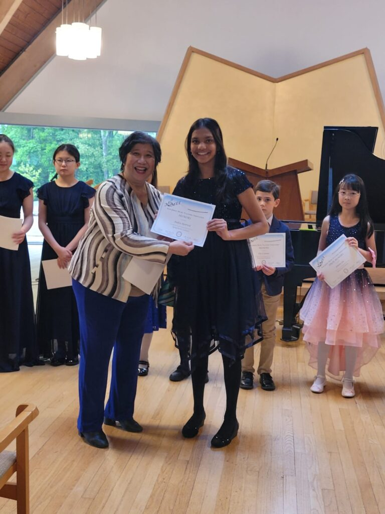
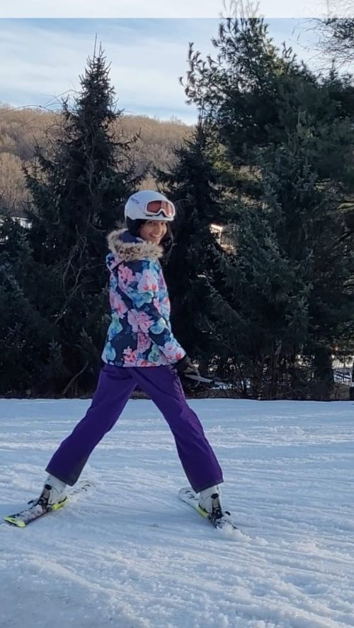
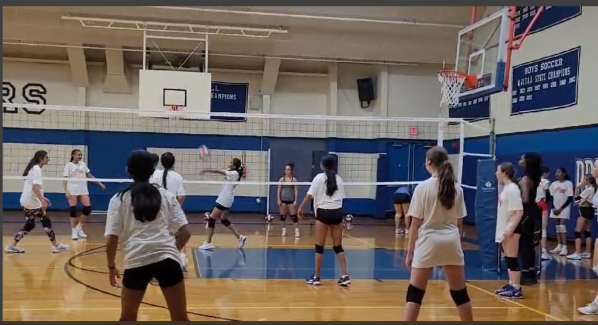

Hi, I'm Aadya Agarwal.
Driven by purposeful energy and deep curiosity, I build systems at the intersection of autonomous robotics, environmental eco-engineering, and youth civic advocacy.
Whether programming autonomous odometry algorithms for competitive robotics, researching biochar matrix water remediation, or directing statewide youth food relief drives, I believe in grounding deep curiosity in verifiable human good.

Autonomous 3-wire odometry chassis & Pedro Pathing Bézier splines

Continuous flow porous matrix filtration apparatus & sensor telemetry plan

1st Chair Flutist & Greenfield Hall piano recitalist
Every Discipline, Beautifully Curated
From autonomous robotics algorithms to empirical environmental water filtration, civic humanitarian governance, and classical performance—each domain is pursued with depth, intention, and measurable impact.

Moments from the Lab, Arena & Field
A glimpse into autonomous systems, environmental filtration, civic drives, and classical arts.


Moments of Discovery & Leadership


01 • Environmental Engineering
American Biochar Co. Water Filtration
Empirical PFAS, heavy metal & toxic contaminant extraction.
Partnering with the American Biochar Company—who donated commercial biochar and featured Aadya's research directly on Ambiochar.com—her investigations evaluate the adsorption capacity of engineered biochar substrates to remove industrial PFAS, agricultural runoff, and dissolved lead from community waterways.
02 • Autonomous Systems & Machine Vision
FIRST Robotics: Lead Autonomous Programmer
Pedro Pathing Bézier splines & Limelight 3G AprilTag localization.
Ranked #14 of 108 international teams at the WPI US Open (Robot Design Finalist) as Lead Autonomous Programmer for The LeapcoderZ. Currently architecting autonomous trajectory generation in Java for The Lawrenceville School FTC Team using Pedro Pathing parametric splines and 3D machine vision.

03 • Healthcare AI & Telemedicine
MoniVitals.com: Remote Patient Triage
Live telemedicine portal connecting edge vitals with clinical insight.
Architect and developer of www.monivitals.com, an accessible digital triage dashboard streaming real-time SpO2, heart rate, and temperature anomalies from low-cost patient sensors to remote healthcare providers. Built upon methodologies from a 30-week Stanford AIMI AI Summer Fellowship.
04 • Global Scholarship & Oratory
Words & Ideas Across Borders
Oxford John Locke Global Essay Commendation & 3x published poet.
Awarded High Commendation by Oxford and Princeton faculty in the John Locke Global Essay Competition. Three-time published writer in the A Celebration of Poets national anthology and ETS Toastmasters Model Speaker, integrating philosophical inquiry with technical leadership.

Direct documentation across every discipline.
American Biochar Co.
Commercial partner feature & empirical PFAS water filtration trials on Ambiochar.com.
Open Article →
MoniVitals.com
Production telemedicine web app and vitals anomaly triage dashboard.
Launch Web App →
MIT Solve Buoy
1st Place Panther Hackathon solar autonomous marine sensor package.
View Hardware →
Greenfield Hall Solo
Grand Prize Solo Recitalist at Manhattan School of Music & 1st chair flute.
Listen Repertoire →
Scholastic Silver Key
National Silver Key in Poetry & Oxford John Locke Global Commendation.
Read Poetry →
STEP LEO Club
Lions Club International youth presidency, statewide drives & UN delegate.
Explore Service →The Master Evidence Vault
Every competition, research trial, civic drive, and recital is cataloged below. Filter by pillar or click any card to inspect full high-resolution documentation.
Folder: Tile - Robotics
Autonomous Code & Robot Chassis
Folder: Tile - Robotics
WPI US Open Award Ceremony
 Folder: Tile - Robotics
Folder: Tile - Robotics
Championship Trophy Presentation
 Folder: Tile - Robotics
Folder: Tile - Robotics
Field Autonomous Route Mapping
Folder: Tile - Robotics
Solar Ocean Buoy Device Prototype
Folder: Tile - Robotics
MoniVitals.com Architecture
 Folder: Awards & Certs
Folder: Awards & Certs
BioResearch Lab Certification
Folder: Community Social Service
Statewide Treat Sorting & Logistics
 Folder: Community Social Service
Folder: Community Social Service
Giving Tuesday Initiative Campaign
 Folder: Community Social Service
Folder: Community Social Service
Annual Food & Toy Drive Logistics
 Folder: Community Social Service
Folder: Community Social Service
MLK Day of Service Mobilization
 Folder: Community Social Service
Folder: Community Social Service
State Senate & Assembly Advocacy
Folder: Speech
Youth Civic Delegation Address
Greenfield Hall Solo Recital
Folder: Arts
1st Chair Advanced Band Concert
 Folder: Arts
Folder: Arts
Orchestral Flute Section Performance
 Folder: Writing & Arts
Folder: Writing & Arts
Music-Fest Grand Prize Winner
USTA Match Play & Team Leadership

Folder: AthleticsAlpine Downhill Skiing & Racing

Folder: Athletics - VolleyballPrinceton Volleyball Academy
Folder: Awards & Certs
John H. Imbrie Humanities Award
 Folder: Awards & Certs
Folder: Awards & Certs
Panther Hackathon 1st Place Honors
 Folder: Awards & Certs
Folder: Awards & Certs
UN Future of Service Award
Folder: Awards & Certs